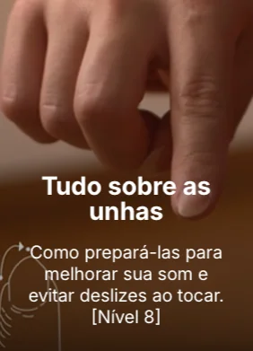
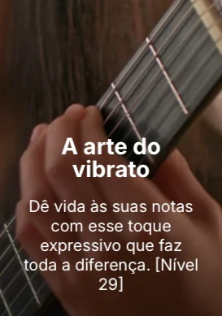
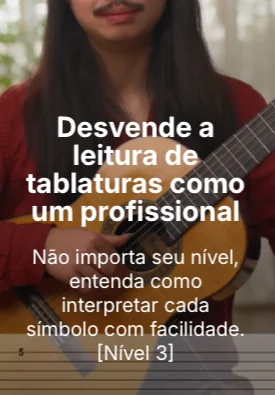
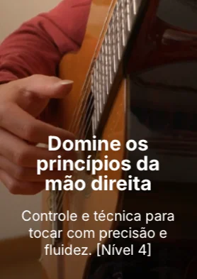
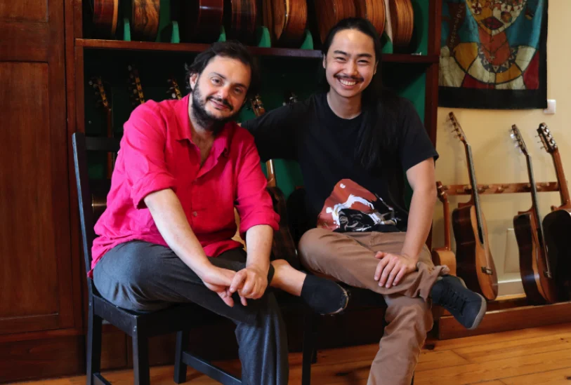

QUER DAR UMA ESPIADA NOS ASSUNTOS QUE VOCÊ VAI ENCONTRAR DENTRO DOS 100 NÍVEIS?
Confira abaixo alguns dos assuntos que você verá no Método Violão 100:




NÃO IMPORTA SE VOCÊ JÁ TENTOU ANTES E NÃO CONSEGUIU EVOLUIR NO VIOLÃO
O PROBLEMA NÃO ESTÁ EM VOCÊ E SIM NO MÉTODO. O MÉTODO VIOLÃO 100 É DIFERENTE DE TUDO QUE VOCÊ JÁ VIU:
100 Aulas Personalizadas
Conteúdo completo do básico ao avançado

Poucos Minutos por Dia
Você não precisa de muito tempo para evoluir e notar seu progresso!

Evolução Contínua
Apostilas de revisão e um sistema de organização dos estudos
Metodologia Estimulante
Sem chatice e enrolação, cada nível é mais desafiador que o outro
JUNTE-SE A UMA COMUNIDADE COM MAIS DE 10.000 ALUNOS!
Confira os depoimentos de alguns dos nossos milhares de alunos:
"Aqui você não aprende apenas a tocar violão, você também está recebendo ensinamentos e as experiências de uma pessoa que realmente vive a música"
"Já fiz vários cursos antes, mas nunca tive a oportunidade de aprender as técnicas que o Arthur passa... Isso foi muito importante para minha evolução no violão"
O que disseram recentemente..
Cara, eu comprei o curso e, no mesmo dia, aprendi a dedilhar! Já fazia anos que eu sonhava em aprender a tocar violão, mas não sentia confiança suficiente para isso. Quando vi sua propaganda no Instagram, algo me fez seguir em frente. Comprei um violão semana passada e seu curso logo em seguida. Estou gostando muito! Aprendi a ler tablatura, algo que antes parecia tão difícil. Obrigado, obrigado mesmo!
Pedro Santos
Aluno
Obrigado pelas aulas, professor! Muita gratidão pelo curso!
Ricardo Oliveira
Aluno
Oi! Queria dizer que me inscrevi no seu curso Violão 100 e estou encantado com a qualidade das aulas! Muito obrigado por oferecer um conteúdo tão bom!
Lucas Mendes
Aluno
Estou fazendo o seu curso e é a primeira vez que me sinto avançando no violão. Sou cantora, mas sempre tive muita dificuldade em tocar. Encontrar seu curso e sua metodologia me despertaram para, finalmente, aprender. Obrigada por fazer um curso tão incrível! Estou no nível 34!
Marina Silva
Cantora
A qualidade deste curso está simplesmente incrível. Muito difícil encontrar algo semelhante. Parabéns! Iniciei ontem e estou super empolgada! Você é um verdadeiro mestre do violão e da música! Meu sonho de infância de tocar violão avançado foi restaurado com sucesso! Obrigada por isso!
Carolina Lima
Aluna
Estou fazendo o curso e é excelente! Após muitos anos estagnado, perdido e desanimado, finalmente estou evoluindo e de forma rápida (mas ligada à dedicação). O que Arthur Endo faz é organizar e sistematizar o estudo para que a gente assimile e aprimore cada passo, criando uma cadeia evolutiva da técnica. Isso motiva muito! Arthur Endo, meu professor. Recomendo!
Fernando Costa
Aluno
POR QUE É TÃO BARATO?
O objetivo do curso é democratizar o acesso ao estudo de violão no Brasil e oferecer um ensino de qualidade para o máximo de alunos possível. Aproveite o preço promocional do plano vitalício e embarque nessa jornada com mais de 10.000 alunos!

APRENDA COM UM PROFESSOR PREMIADO INTERNACIONALMENTE!
Arthur Endo é compositor, arranjador e violonista premiado em competições nacionais e internacionais, sendo hoje um dos representantes da nova geração do violão brasileiro. Seu último disco foi produzido por Yamandu Costa, um dos maiores violonistas do Brasil e do mundo.
PREMIAÇÕES:
- USG Internacional
- Imagine Brasil 2017
- Melhores da Música Brasileira 2019 (Embrulhador)
FORMAÇÃO:
- Conservatório EMESP/ULM - Universidade Livre de Música
- Bacharelado em Violão na UNICAMP, sob orientação de Ulisses Rocha
NUNCA MAIS SE SINTA FRUSTRADO!
O principal obstáculo para a evolução no violão é a falta de direcionamento. Com o Método Violão 100, você nunca mais ficará sem saber o que ou como estudar.
VEJA COMO É O CURSO POR DENTRO
OFERTA VITALÍCIA POR TEMPO LIMITADO!
Método Violão 100 - Completo
INCLUI:
- 100 Níveis Completos
Do básico ao avançado com estrutura clara.
- 8 Apostilas de Revisão
- 10 Desafios
- Garantia de 7 Dias
- Guia de Escuta do Violão Brasileiro
- Ebook com 89 Exercícios
- Acesso Vitalício
Método Violão 100 Completo por apenas:
R$299,60 à vista
F.A.QF.A.Q
Garantia de 7 Dias
Devolução do dinheiro garantida
Site Seguro
Criptografia SSL de 256 bits